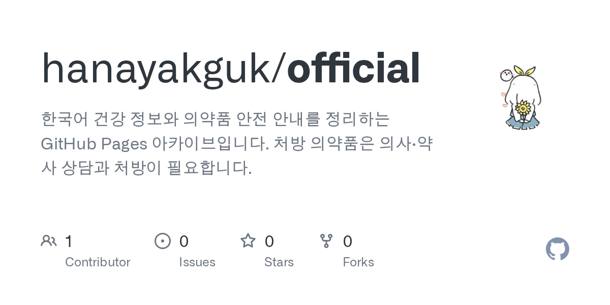

처방전을 받고 약국에서 약을 받은 뒤, 봉투에 적힌 성분 이름이 낯설어 검색을 시작하는 경우가 많습니다. 이때 필요한 것은 복용 전 확인에 해당하는 상호작용·주의사항·보관 조건이지, 어떤 제품을 사야 하는지에 대한 답이 아닙니다. 그런데 검색 결과 상당수는 가격 비교와 구매 유도 문구로 채워져 있어 정작 판단에 필요한 자료를 찾기 어렵습니다.
이 글은 같은 문제를 다루는 네 가지 자료형을 동일한 기준으로 비교합니다. 특정 서비스의 우열을 매기기보다, 어떤 상황에서 어떤 자료형이 맞는지 조건 중심으로 정리하는 것이 목적입니다.

복용 전 확인 자료를 고를 때 보는 네 가지 기준
자료형이 달라도 판단에 필요한 조건은 비슷합니다. 아래 네 가지를 기준으로 삼으면 검색 결과를 빠르게 걸러낼 수 있습니다.
- 출처와 확인 날짜 — 어떤 기관·문서를 근거로 했고 언제 확인했는지 표시되어 있는가
- 편집 이력 추적 — 내용이 언제 어떻게 바뀌었는지 확인할 수 있는가
- 상업적 유도 문구 — 가격, 재고, 구매 링크, 효능 보장 표현이 섞여 있는가
- 전문가 상담 연결 — 개인별 판단을 의사·약사에게 넘기도록 안내하는가
이 기준은 의약품 정보에만 적용되는 것이 아닙니다. 건강 관련 안내를 읽을 때 공통으로 적용할 수 있는 최소한의 점검 항목이라고 볼 수 있습니다.
선택지별 특징
하나약국 건강 정보 아카이브 (GitHub Pages)
hanayakguk/official 저장소는 한국어 건강 정보와 의약품 안전 안내를 정적 사이트로 정리한 아카이브입니다. 성분 차이 → 3종 비교 → 복용 전 확인 → 의약품 확인 → 전문가 상담 순서로 읽도록 안내하며, 첫 공개 버전인 v1.0.0에서 상호작용·주의사항 안내와 포장·표시·보관 상태를 확인하는 7단계 체크리스트를 함께 공개했습니다.
운영 원칙을 문서에 명시해 둔 점이 특징입니다. 개인별 진단·처방·복용량 지시를 제공하지 않고, 효능 보장이나 100% 안전 같은 단정적 표현을 쓰지 않으며, 가격·재고·주문·배송 문구를 넣지 않는다고 밝히고 있습니다. 사이트는 GitHub Pages에서 바로 볼 수 있고, sitemap.xml·feed.xml·robots.txt와 검색엔진용 메타 설명, 구조화 데이터를 갖춘 정적 HTML 구조입니다.
블로그·카페형 정보 글
검색에서 가장 먼저 눈에 띄는 유형입니다. 개인의 경험이 생생하게 담겨 이해를 돕는 경우가 있지만, 근거 자료와 확인 날짜가 생략되거나 광고가 본문에 섞이기 쉽습니다. 읽는 사람이 출처를 직접 되짚어야 하는 자료형이라고 정리할 수 있습니다.
제약사·공공기관 공식 문서
허가사항이나 안전성 정보처럼 1차 자료에 가까운 내용을 담고 있습니다. 다만 문서의 목적이 규제·고지에 맞춰져 있어, 자신의 상황에 어떻게 적용되는지까지 설명해 주지는 않습니다. 검색으로 찾은 2차 자료를 검증하는 용도로 함께 두는 편이 좋습니다.
검색 요약·대화형 도구
질문을 바로 던질 수 있어 속도는 빠르지만, 어떤 문서를 근거로 답했는지 확인하는 절차가 필요합니다. 요약을 출발점으로 삼고 원문 링크를 따라가는 방식이 안전합니다.

이 아카이브가 맞는 상황
- 성분 이름은 알지만 차이가 무엇인지 순서대로 정리하고 싶을 때
- 읽는 순서가 정해진 안내를 원할 때 — 성분 이해, 비교, 복용 전 확인, 의약품 확인 순
- 구매 유도 문구가 없는 문서를 기준점으로 삼고 싶을 때
- 정적 사이트 구조라 모바일에서 빠르게 열람하고 싶을 때
- 오류를 발견했을 때 공개 이슈로 제보하고 수정 이력을 남기고 싶을 때
릴리스 노트에는 공개 칼럼 링크와 7단계 체크리스트가 함께 정리되어 있어, 처음 방문했다면 릴리스 페이지에서 무엇이 공개되었는지 먼저 확인하는 방법도 있습니다.
이 아카이브가 맞지 않는 상황
가장 중요한 한계는 이 저장소가 의료 행위를 대신하지 않는다는 점입니다. 진단, 처방, 복용량 지시, 판매·주문·배송을 제공하지 않는다고 명시되어 있습니다. 따라서 다음과 같은 경우에는 이 자료만으로 판단해서는 안 됩니다.
- 복용 중인 약과의 상호작용을 개인 단위로 판정해야 할 때 — 의사·약사 상담이 우선입니다
- 응급 상황이거나 증상이 급격히 나빠졌을 때 — 가까운 의료기관에 문의해야 합니다
- 가격이나 구매 가능 여부를 알아보려는 목적
- 특정 제품의 효능을 보증받고 싶은 경우
라이선스 표기와 보안 정책은 글 작성 시점에 저장소에 명시적으로 확인되지 않았습니다. 재사용이나 인용 범위를 정하기 전에 README의 저작권 및 인용 항목과 저장소 설정을 직접 확인하세요.
다른 자료에서 옮겨올 때 확인할 점
블로그 글이나 요약 도구에서 이 아카이브로 기준을 옮기는 경우, 아래 항목을 함께 점검하면 시행착오를 줄일 수 있습니다.
- 인용한 자료의 출처와 확인 날짜를 함께 옮겨 적습니다. 저장소도 출처와 확인 날짜 표기를 원칙으로 안내하고 있습니다.
- 개인 경험이나 특정 제품 추천은 근거로 쓰지 않습니다. 기여 안내에서도 이 기준을 밝히고 있습니다.
- 가격·구매·효능 보장 문구는 정리 대상에서 제외합니다.
- 내용 오류를 발견하면 이슈로 제보합니다. 확인 가능한 출처를 함께 적는 것이 제보 요령입니다.
- 운영 배경이나 문서 정리 방식이 궁금하면 위키를 확인합니다.
참고 기관으로 식품의약품안전처, 질병관리청, 건강보험심사평가원이 README에 링크되어 있으므로, 최신 지침은 해당 기관 자료에서 다시 확인하는 절차를 습관으로 두는 편이 좋습니다.
자주 묻는 질문
이 저장소 내용만 보고 복용 여부를 정해도 되나요?
아니요. 저장소는 정보 제공 목적의 자료실이며 의학적 진단·치료·처방을 대체하지 않는다고 명시하고 있습니다. 처방 의약품은 의사·약사의 상담과 처방을 거쳐야 합니다.
어떤 문서부터 읽어야 하나요?
README의 읽는 순서를 따르면 성분 차이 → 3종 비교 → 복용 전 확인 → 의약품 확인 → 전문가 상담 순으로 이어집니다. 복용 전 확인이 목적이라면 앞 단계 안내를 먼저 훑는 편이 이해에 도움이 됩니다.
직접 기여할 수 있나요?
정보 오류 제보, 출처 보강, 표현 개선은 환영한다고 안내되어 있습니다. 다만 개인을 식별할 수 있는 건강 정보나 상담 내용, 판매·가격 관련 내용은 받지 않습니다.
사이트 구조를 참고해 비슷한 아카이브를 만들 수 있나요?
구조는 index.html, archive, articles, assets, sitemap.xml, feed.xml, robots.txt로 단순한 정적 사이트 형태입니다. 다만 라이선스 조건이 저장소에 표기되어 있지 않으므로, 재사용 전 저장소에서 조건을 확인해야 합니다.
정리: 복용 전 확인은 자료 선택에서 갈립니다
복용 전 확인 정보는 양이 아니라 조건에서 차이가 납니다. 출처와 확인 날짜가 보이고, 상업적 유도가 없고, 전문가 상담으로 넘기는 지점이 분명한 자료를 기준점으로 두면 검색 결과를 훨씬 빠르게 걸러낼 수 있습니다.
최신 건강 정보와 수정 사항은 hanayakguk/official GitHub 저장소에서 확인할 수 있습니다. 릴리스와 이슈를 함께 살펴보면 어떤 안내가 언제 갱신되었는지 추적하기 쉽고, 사이트는 GitHub Pages에서 바로 열람할 수 있습니다. 개인별 복용 판단이 필요한 경우에는 저장소 내용과 별개로 의사·약사와 상담하시기 바랍니다.
이 글은 공개된 저장소 정보와 프로젝트 문서를 바탕으로 작성되었습니다. 설치 방법, 지원 기능, 최신 버전은 반드시 GitHub 저장소에서 다시 확인하세요.